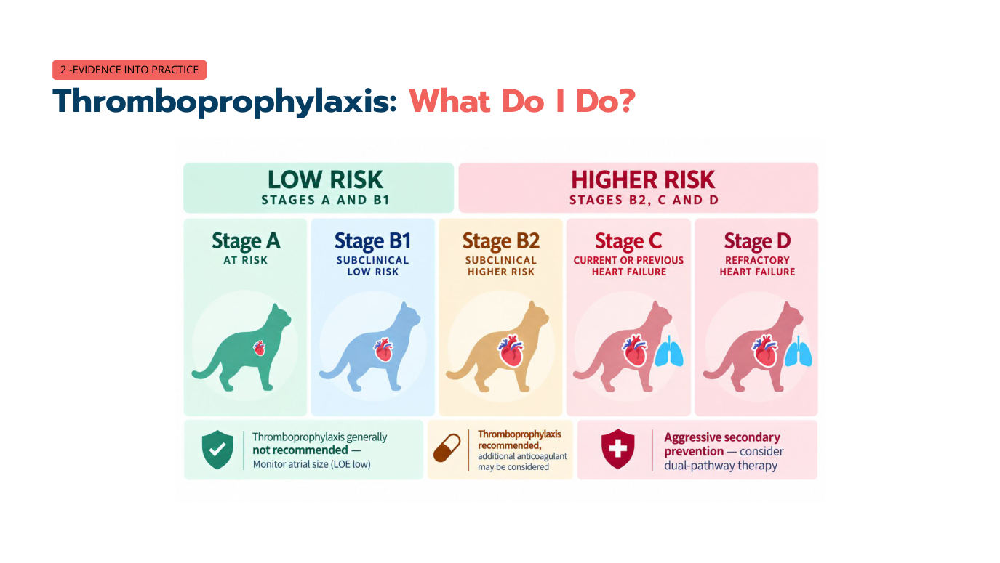
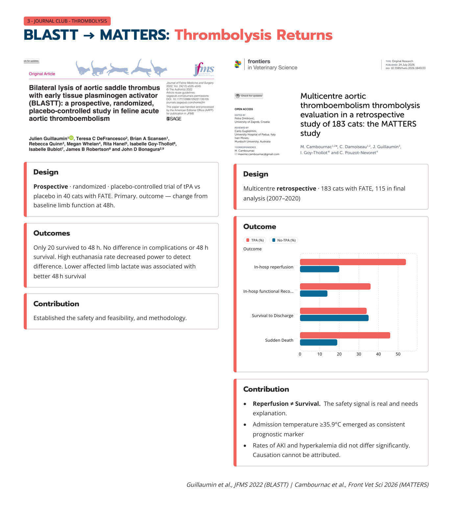
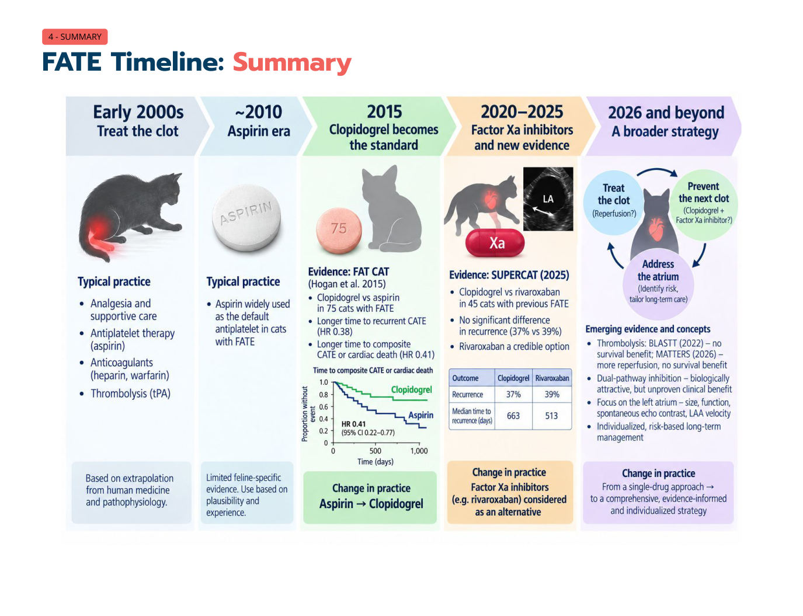

會栓塞的貓：FATE 的處置，我們做法改變了嗎？
主講：Elise Boller, DVM, DACVECC
TSFM Annual Conference 2026｜Day 1 — The Crashing Cat｜Session 5｜場次 05
目前只有講義，沒有課堂錄音；講義上的影片（Vimeo）與現場投票無法收錄。
⭐ 必記原則
- FATE 的 5P：疼痛、輕癱／癱瘓、無脈搏、蒼白、體溫隨環境變（冰冷）
- 臨床不確定時要證明灌流受損：患肢比健肢 血糖低 ≥ 41 mg/dL（2.3 mmol/L）、乳酸高 ≥ 2.2 mmol/L；Doppler 無訊號；血管超音波
- 左心房才是製造血栓的器官：中重度 LA 擴大、自發性超音波顯影（SEC）、心內血栓＝高風險
- 阿斯匹靈不夠：FAT CAT（2015）clopidogrel 中位 443 天 vs 阿斯匹靈 192 天才復發
- Rivaroxaban 是可信的替代：SUPERCAT（2024）與 clopidogrel 復發率 39% vs 37%，無顯著差異
- 預防往上游移：每次心臟回診都評估 LA；B1 → B2 才是關鍵時刻（B2 起建議 clopidogrel）
- 極高風險（心內血栓、單藥下復發）可考慮雙路徑（clopidogrel＋rivaroxaban）
- 溶栓（tPA）：再灌流 ≠ 存活；改善再灌流與肢體功能，但沒有存活優勢、可能增加猝死；入院體溫 ≥ 35.9 °C 是預後指標
學習目標與病例 Milo
▾學習目標
- 風險分層
- 評讀證據
- 個別化治療
- 找出還沒有答案的問題
講義封面引用 Kittleson 等 2021（JFMS 23(11):1028–1051）。病例 Milo 改編自 JFMS 2024;26:1–13 的教學病例（虛構）。
Milo：一個非常糟的早上
- 7 歲公貓（已結紮），家貓短毛
- 已知有心肌病、左心房擴大，沒有在吃預防血栓的藥
- 突然後肢不能用
1. FATE 的診斷：5P，以及不確定時怎麼證明
▾5P
| 英文 | 中文 |
|---|---|
| Pain | 疼痛 |
| Paresis／Paralysis | 輕癱／癱瘓 |
| Pulselessness | 無脈搏 |
| Pallor | 蒼白（肉墊、甲床） |
| Poikilothermia | 體溫隨環境變（肢端冰冷） |
診斷不確定時（Yee 等 2024）
1. 比較兩肢
- 患肢 vs 健肢成對採樣
- 血糖 ↓ ≥ 41 mg/dL（2.3 mmol/L）
- 乳酸 ↑ ≥ 2.2 mmol/L
2. 檢查血流
- 手持 Doppler：遠端動脈訊號消失或明顯減弱強烈支持 FATE
3. 看到它
- 血管超音波：找血栓，或患肢動脈血流消失／減少
Milo 的檢查
後肢
- 無法行走
- 左：沒有自主運動；右：自主運動微弱
- 兩側遠端都冰冷，左側較嚴重
- 左肉墊蒼白
- 後肢都沒有 Doppler 訊號
全身
- 清醒但痛苦
- HR 190、RR 52
- 肛溫 36.5 °C
- 呼吸用力增加、瀰漫性爆裂音
| 項目 | 患肢 | 全身（中心） |
|---|---|---|
| 乳酸 | 7.2 mmol/L | 2.3 mmol/L |
| 血糖 | 2.5 mmol/L（約 45 mg/dL） | 9.7 mmol/L（約 175 mg/dL） |
- Creatinine 2.1 mg/dL（186 µmol/L）、血小板 92,000、NT-proBNP 1,200（高）
- 胸腔 POCUS：B-lines、左心房大
2. 風險分層：左心房才是製造血栓的器官
▾REVEAL：把風險放在對的位置
- 共收 1,730 隻貓，其中 1,008 隻為臨床前期 HCM／HOCM
- 其中 30.5% 後來發生 CHF 或 ATE
換句話說，大約七成的心肌病貓一輩子不會發生 CHF 或 FATE——所以要找出真正高風險的那群。
大小很重要：急診可以看的指標
急診心臟 POCUS 就能看的三個高風險指標：
中重度 LA 擴大
- 💡 常用 LA:Ao > 1.5–1.8 或 LA 直徑 > 16–18 mm
自發性超音波顯影（SEC）
- LA 內「煙霧狀」回音，代表血流淤滯
心內血栓
- 最高風險
Payne 等 2013（JVIM 27:1427–1436）、Fox REVEAL 2018、Ironside（JFMS 2020）。LA 的數值切點是整理者補充，講義沒有寫。
Milo：下一步？（複選）
選項：a 阿斯匹靈、b clopidogrel、c rivaroxaban、d apixaban、e 未分化肝素（UFH）、f 低分子量肝素（LMWH）、g 溶栓（alteplase／tPA）、h 以上皆非——需要更多資訊。
講義沒有公布答案；從後面的病程看，Milo 的飼主選擇了溶栓＋抗凝血＋clopidogrel（📄 25）。
3. 臨床做法的轉變：預防血栓
▾舊世界：阿斯匹靈
- 用藥下的復發率 17–75%（回溯性資料，範圍又寬又讓人不滿意）
- 一年復發率 25–61%
- 臨床上無法接受——但當時沒有直接比較的資料。然後到了 2015 年。
FAT CAT（2015）：改變了做法
- 多中心、雙盲、隨機、陽性對照；75 隻心因性 ATE 存活的貓
- Clopidogrel 18.75 mg/貓 PO q24h vs 阿斯匹靈 81 mg/貓 PO q72h
- 到 ATE 復發的中位天數：clopidogrel 443 天（95% CI 185–990） vs 阿斯匹靈 192 天（62–364），p = 0.024
- ATE 復發或心因性死亡：clopidogrel 346 天 vs 阿斯匹靈 128 天（p = 0.033）
- 兩種藥耐受性都好
2018／2019 CURATIVE：決策框架
獸醫重症抗血栓藥物合理使用共識：誰有風險？哪一種血栓？用什麼？怎麼監測？什麼時候停？
| 情境 | 建議 |
|---|---|
| 長期、極高風險 | 考慮雙重治療 |
| 能口服時 | Clopidogrel |
| 不能口服 | 注射型 UFH 或 LMWH |
| 急性 FATE | 抗血小板＋抗凝血 |
2020 ACVIM：把預防往上游移
舊模式：被動
- 血栓已經形成
- FATE 發生了 → 才開始抗血栓
新做法：主動
- 心房是監測目標
- 找出會製造血栓的心房 → 在第一次 FATE 之前介入
初級預防的證據是從 FAT CAT（次級預防）與觀察性資料推論而來。2020 共識不建議例行溶栓。
SUPERCAT（Brainard 等，JAVMA 2024）：rivaroxaban 加入討論
| 結果 | Rivaroxaban | Clopidogrel | |
|---|---|---|---|
| ATE 復發 | 39% | 37% | 無顯著差異 |
| 中位復發時間 | 513 天 | 663 天 | 無顯著差異 |
| 存活 | — | 無差異 | |
講義附錄：SUPERCAT 為 RCT，n = 45，rivaroxaban 2.5 mg/貓 q24h；試驗沒有設計來證明兩者等效。
4. 把證據用在臨床：兩條路徑與分期用藥
▾口服藥的兩條路徑
Clopidogrel（細胞性、初級止血）
- 機轉：P2Y12 阻斷劑，抑制血小板活化
- 劑量：4–10 mg/kg 一次（負荷），之後 18.75 mg（總量）q24h
- 作用持續整個血小板壽命
Rivaroxaban（血漿性、次級止血）
- 機轉：Xa 因子抑制劑，阻斷凝血瀑布、減少凝血酶爆發
- 劑量：0.5–1.0 mg/kg q24h
- 一停藥，保護很快就消失
注射型抗凝血：UFH vs LMWH
| UFH（未分化肝素） | LMWH（低分子量肝素） | |
|---|---|---|
| 機轉 | 經抗凝血酶 → 抑制 IIa＋Xa | 經抗凝血酶 → 主要抑制 Xa |
| 劑量 | 250 U/kg SC q6h | Enoxaparin 0.75–1 mg/kg SC q6h |
| 考量 | 便宜、容易取得、短效 | 個體反應差異大 |
目前沒有貓的預後資料證明 UFH 或 LMWH 哪一個對 FATE 比較好。
預防血栓：我該怎麼做？（依 ACVIM 分期）

| 分期 | 風險 | 做法 |
|---|---|---|
| A（有風險）／B1（臨床前期、低風險） | 低 | 一般不建議預防血栓；監測心房大小（LOE 低）；注意 A/B1 → B2 的轉變。只有約 30% 心臟病貓會走到 CHF 或 FATE |
| B2（臨床前期、高風險：中重度 LA 擴大、LA FS% 低、LAA 流速低、SEC） | 高 | 建議 clopidogrel（或 rivaroxaban），可考慮再加抗凝血劑；持續監測 SEC |
| C（目前或曾經心衰竭）／D（難治性心衰竭） | 最高 | 積極次級預防，雙路徑治療合理；溶栓也不再完全不考慮 |
5. 下一個問題：溶栓
▾BLASTT → MATTERS：溶栓回來了

BLASTT（Guillaumin 等，JFMS 2022）
- 前瞻性、隨機、安慰劑對照：tPA vs 安慰劑，40 隻 FATE 貓
- 主要結果：48 小時肢體功能變化
- 只有 20 隻活到 48 小時；併發症與 48 小時存活無差異
- 安樂死比例高，統計檢定力不足
- 患肢乳酸較低與 48 小時存活較好有關
- 貢獻：建立了安全性、可行性與方法
MATTERS（Cambournac 等，2026）
- 多中心回溯、183 隻 FATE 貓，115 隻納入分析（2007–2020）
- tPA 組：院內再灌流（約 54% vs 20%）與功能恢復（約 36% vs 14%）較多
- 出院存活率相近（約 34% vs 35%）
- 猝死較多（約 46% vs 19%）——安全訊號是真的，需要解釋
- 入院體溫 ≥ 35.9 °C 是一致的預後指標
- AKI 與高血鉀發生率沒有顯著差異；無法推論因果
MATTERS 的百分比是從講義長條圖目測，僅供參考。
溶栓：再灌流 ≠ 存活
✅ 好處
- 改善再灌流
- 肢體功能較好
❌ 代價
- 可能猝死：有嚴重不良事件風險
- 沒有存活優勢
6. Milo 的後續：肺好了、腎變差了
▾飼主選擇溶栓
- 飼主溝通：知情同意——出血、再灌流傷害、高血鉀、心律不整、猝死的風險
- 治療：Alteplase、鴉片類 CRI、抗凝血、clopidogrel、持續 CHF 治療
肺好了，腎變差了
| 時間 | Creatinine |
|---|---|
| 入院 | 2.1 mg/dL（186 µmol/L） |
| 隔夜 | 2.8 mg/dL（248 µmol/L） |
| 第 2 天 | 3.6 mg/dL（318 µmol/L） |
改善中
- 呼吸用力
- 給氧需求
- 右後肢活動
- 舒適度
令人擔心
- 氮血症持續惡化
- 左後肢仍冰冷、無力
- 不吃
下一步？（複選）a 維持 furosemide 原劑量、b 停 furosemide、c furosemide 減量、d 放鼻食道餵食管、e 開始 IV 輸液、f 停止止痛藥、g 建議透析、h 開始 cyproheptadine、i 開始 pentoxifylline。
Milo 回家了！
出院計畫：Clopidogrel ＋ Rivaroxaban（雙路徑）、Furosemide、止痛、復健、心臟科追蹤。
7. FATE 時間軸與「星期一早上要改什麼」
▾FATE 處置的演變

| 時期 | 主流做法 | 依據 |
|---|---|---|
| 2000 年代初 | 治療血栓：止痛支持、阿斯匹靈、肝素／warfarin、tPA | 從人醫與病理生理推論 |
| 約 2010 | 阿斯匹靈時代 | 貓的證據有限，靠合理性與經驗 |
| 2015 | Clopidogrel 成為標準（FAT CAT；復發 HR 0.38、復發或心因性死亡 HR 0.41） | 阿斯匹靈 → clopidogrel |
| 2020–2025 | Xa 因子抑制劑（SUPERCAT） | Rivaroxaban 是替代選擇 |
| 2026 以後 | 更全面：治療血栓（再灌流？）＋預防下一個（clopidogrel＋Xa 抑制劑？）＋處理心房（風險辨識、長期照護） | 單一藥物 → 證據導向的個別化策略 |
星期一早上我實際要改什麼？
- 更早想到風險：在 FATE 發生前就想到血栓。每次心臟回診都評估 LA 大小＋功能＋SEC／血栓。B1 → B2 的轉變才是關鍵時刻，而不是危機發生時。
- 超越阿斯匹靈：Clopidogrel 仍是基礎抗血小板藥（FAT CAT 2015）；rivaroxaban 是可信、有證據支持的替代（SUPERCAT 2024）。
- 個別化預防：極高風險（心內血栓、單藥下復發）可能受益於雙路徑抑制。證據仍在發展，要向飼主說明不確定性。血栓的種類很重要（如果你也治療狗）。
- 對溶栓保持開放：tPA 改善再灌流與功能恢復（MATTERS 2026），但還沒證明存活優勢。病例選擇（包括入院體溫）可能是找出誰會受益的關鍵。
- 治療心因性肺水腫：furosemide、抗焦慮等。
- 治療疼痛，照顧腸胃！用鴉片類止痛，同時注意腸胃功能與食慾。
- 早點進行對的對話：對發生過 ATE 的貓，仔細考量疼痛、解釋纖維蛋白溶解，並設定實際的期望。
8. FATE 藥物劑量總表
▾核心內科治療
| 藥物 | 劑量 | 臨床考量 |
|---|---|---|
| 止痛 | ||
| Methadone | 0.1–0.4 mg/kg IV/IM | 強效止痛；監測體溫與換氣 |
| Fentanyl | 1–5 µg/kg/h IV CRI | 可調整；監測體溫與換氣 |
| 抗血小板 | ||
| Clopidogrel | 18.75 mg/貓 PO q24h（負荷劑量 37.5 mg 一次） | 首選抗血小板；監測出血 |
| 抗凝血 | ||
| UFH | 350–375 IU/kg IV，之後 150–250 IU/kg SC q6–8h | 便宜；反應差異大；監測 aPTT |
| Dalteparin | 150–180 IU/kg SC q4–6h | LMWH；藥動學較可預測；可行時監測 anti-Xa |
| Enoxaparin | 0.75–1 mg/kg SC q6h | LMWH；可行時監測 anti-Xa |
| Rivaroxaban | 0.5–1 mg/kg PO q24h；也有報告到 2.5 mg/貓 q24h | 口服 Xa 抑制劑；出血風險 |
講義 📄 19 的 clopidogrel 負荷劑量寫「4–10 mg/kg 一次」，📄 31 寫「37.5 mg 一次」；4 kg 貓兩者相近。
其他選項與限制
| 藥物 | 劑量 | 臨床考量 |
|---|---|---|
| Buprenorphine | 0.01–0.02 mg/kg IM/IV/SC q8h | 作用較久；監測體溫 |
| Gabapentin | 50–100 mg/貓 PO q12–24h | 輔助止痛／抗焦慮；會鎮靜 |
| Apixaban | 0.2 mg/kg PO；也有依體重 q12h 的報告 | 貓的資料比 rivaroxaban 少 |
| 溶栓（事件後 < 6 小時） | ||
| Alteplase（tPA） | 1 mg/kg IV 1 小時給完，其中 10% 先慢推（約 1 分鐘）；或 0.1–0.5 mg/kg/h IV CRI | 可能再灌流；存活好處未證實；出血／猝死疑慮 |
| Reteplase | 1 IU/貓 IV q8h | 研究有限；好處不確定 |
| 其他／歷史用藥 | ||
| Aspirin | 5–81 mg/貓 PO q72h | 不再優於 clopidogrel |
| Pentoxifylline | 100 mg/貓 PO q12h | 改善側枝循環的效果未證實 |
| Cyproheptadine | 2 mg/貓 PO q12h | 促進食慾；改善側枝循環的效果未證實 |
證據等級整理（學員講義）
| 藥物 | 試驗 | 重點結果 | 證據等級 |
|---|---|---|---|
| Aspirin | 2015 前（無 RCT） | 復發 17–75%；一年 25–61% | 專家意見 |
| Clopidogrel 18.75 mg q24h | FAT CAT（2015）RCT n = 75 | 中位 443 天 vs 阿斯匹靈 192 天（p = 0.024） | RCT（中等） |
| Rivaroxaban 2.5 mg q24h | SUPERCAT（2024）RCT n = 45 | 復發 39% vs 37%；513 vs 663 天（NS） | RCT（未設計證明等效） |
| 雙路徑（clopi＋riva） | 體外／觀察性 | 血小板抑制有加成；沒有 RCT 證明較好 | 低／發展中 |
| 溶栓 | MATTERS（2026 回溯）、BLASTT（2022 RCT） | 可能改善灌流與肢體功能，不影響存活，可能有安全疑慮 | 不一致 |